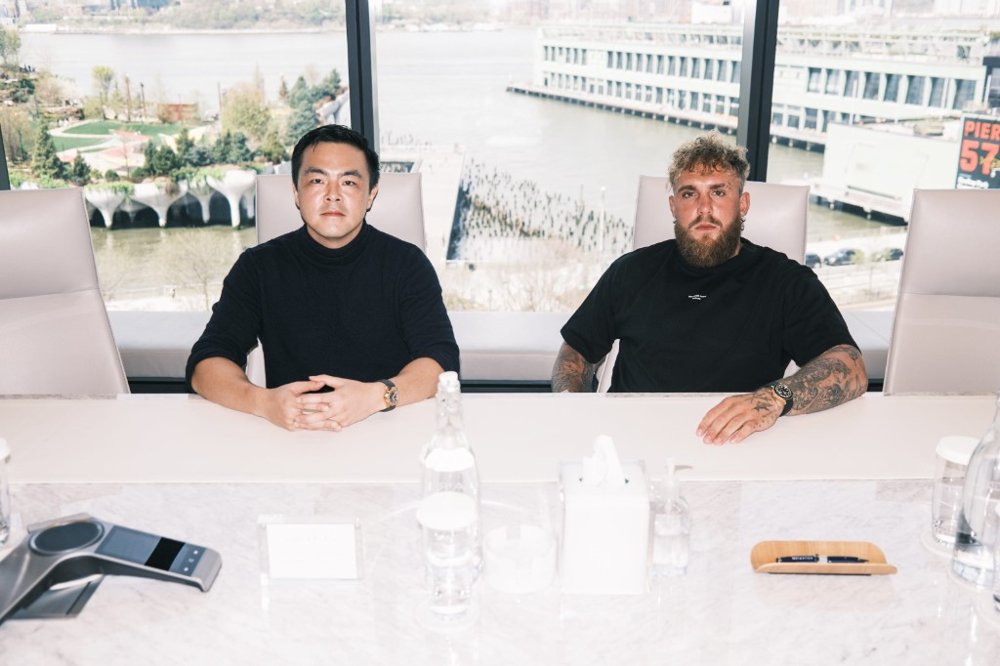

Fame Gets You in the Room.Capital Gets You the Deal.
What Anti Fund's $180M actually reveals about attention as leverage — and where the popular version of that story falls apart.
Behind the Story


Here are the two numbers that explain Anti Fund better than any thesis about the creator economy.
$500,000 for 10% of your company. That's the early-stage end — first checks between $100,000 and $500,000, taking an ownership stake most seed investors would need to write ten times as much to get.
$10 million and up. That's the other end — growth checks into companies that have already broken out. OpenAI. SpaceX. Anduril. Cognition.
The firm calls it an extreme barbell: the earliest stage on one side, the latest on the other, and nothing in the crowded middle. Anti Fund closed a $100 million growth vehicle in June 2026, lifting total assets above $180 million, six months after an oversubscribed $30 million Fund I. It started in 2021 as an AngelList rolling fund.
The interesting question isn't whether Jake Paul can pick companies. It's why those two ends of the barbell work for completely different reasons — and why only one of them is a story about attention.
The claim everyone is making
You've heard the thesis. Capital is abundant, attention is scarce, distribution is the new moat. It's the most repeated idea in venture right now, and Anti Fund is the case study everyone reaches for.
It's worth noting where the framing comes from. Anti Fund's own announcement puts it plainly: startups live and die on capital and attention, capital is a commodity, attention isn't. Every firm sells the former; they claim to wield the latter.
That's a sharp piece of positioning. It's also a fund marketing itself, and it deserves the same scrutiny you'd apply to any other pitch.
So let's actually check it.
Where capital genuinely stopped being the bottleneck
The first half of the claim holds up.
The largest venture firms are sitting on enormous dry powder. Angels deploy from their phones. Family offices, sovereign funds, PE, hedge funds, and corporate venture arms are all hunting allocation. For a credible founder building something genuinely interesting, money is not the hard part it was in 2005.
Scarcity creates power, and the scarcity moved. That much is real.
But "capital is no longer the bottleneck for a talented seed-stage founder" is a much narrower claim than "attention is now more valuable than capital." The article that conflates those two is doing the reader a disservice — and the Anti Fund story is precisely where the conflation breaks.
What attention actually buys
Return to that first number: $100,000 to $500,000 for 10%.
By conventional pre-seed math, that price is bad for the founder. Ten percent of a company for a quarter-million dollars implies a valuation well below what a technical founder in AI or robotics could command elsewhere in this market — and these are founders who could raise from anyone.
They take it anyway. That gap is the entire measurable value of attention, and it's the strongest evidence for the thesis anywhere in this story.
What the founder is buying is a distribution channel they don't have to build. Recruiting reach. A launch that lands. Candidates who take the call. In a market where thousands of technically impressive companies never get noticed at all, that's not a soft benefit — it's priced, explicitly, in equity.
This is attention functioning as capital in the most literal sense: a scarce asset exchanged for ownership. Not a metaphor. A term sheet.
An audience isn't a following. It's a distribution network you own rather than rent.
And unlike money, it's hard to copy. Any firm can wire $500,000. Very few can put a company in front of tens of millions of people on the day it launches.
What attention doesn't buy
Now the other end of the barbell, where the popular story quietly falls apart.
Anti Fund's positions in OpenAI, SpaceX, Anduril, and Cognition sit in a $100 million growth fund. The investors in that fund include Aquarian Holdings — a $27.1 billion investment firm — along with FocusPoint Private Capital Group, a former D.E. Shaw partner, and the founder of a private equity firm.
Read that list again. Those are not creator-economy institutions. That is conventional, institutional capital, raised into a conventional growth vehicle, deployed in $10 million-plus checks.
Access to a late-stage OpenAI or SpaceX round is not granted because someone has a large audience. It's granted to whoever can write the size of check the round requires, through the relationships that surface the allocation. Attention may have helped raise the fund. It did not substitute for it.
And notice which companies these are. OpenAI, SpaceX, and Anduril are among the most capital-hungry enterprises ever built — businesses whose fundamental constraint is compute, launch infrastructure, and manufacturing. If attention had truly displaced capital, these would be the worst examples available to make the case.
Jake Paul has described the mechanism more precisely than most of the commentary about him: fame gets him in the right rooms.
Rooms. Not term sheets. The distinction is the whole article.
The three problems with the strong version
If you're going to build a strategy on this idea, three objections deserve an answer.
Survivorship
For every creator who converted an audience into deal flow, thousands have enormous followings and no access to anything. Attention is doing real work at Anti Fund, but it's paired with Geoffrey Woo — Stanford computer science, an operator who previously built and sold companies, and the partner most associated with sourcing and diligence. Strip out that half and the fund doesn't exist. The Paul brothers' reach without technical credibility is a media company, not a venture firm.
Fragility
Capital compounds quietly and doesn't care what you said last year. Attention decays, requires constant feeding, and can invert overnight. It is a considerably more volatile asset than the confident version of this thesis admits.
Non-transferability
A fund's capital belongs to the institution. Its attention belongs to a person, who can leave, age out of relevance, or become a liability. Building an institution on an asset that walks out the door is a real structural risk, and it's why most attempts to industrialize this have struggled.
What's actually true
Strip out the overclaim and something more useful remains.
Attention hasn't replaced capital. It has become a second, separately priced form of leverage that a small number of people possess and almost nobody can manufacture on demand. Where it's most powerful is exactly where Anti Fund applies it: early, when a company has no distribution of its own and the marginal value of being noticed is at its highest.
At scale, in later rounds, against balance-sheet-intensive companies, capital still wins — because that's what those companies consume.
The founders who benefit from this shift aren't the ones who chase an audience instead of building. They're the ones who build something real and then refuse to assume the market will find it on its own. The market doesn't reward what's best. It rewards what's understood — and being understood is a discipline, not a byproduct.
Technology creates possibility. Narrative creates belief. You need both, and most people are only working on one.
Anti Fund's actual lesson isn't that a YouTuber became a venture capitalist. It's that they built a firm around the honest observation that capability and distribution are two different assets, priced them separately, and structured the fund accordingly.
That's a more modest claim than the headline everyone is running with. It's also the one that survives contact with the numbers.
Build something worth paying attention to.
In an economy where capital is abundant, distribution is the advantage — but only when there's something behind it.
Sources
- Anti Fund Closes Oversubscribed $30 Million Fund I; Logan Paul Joins as General Partner — Business Wire, December 2025
- Anti Fund closes $100M growth fund, AUM tops $180M — Business Wire, June 2026
- Anti Fund Growth I analysis — Fund Momentum, June 2026
- Geoffrey Woo — background, HVMN, Betr and W incubations